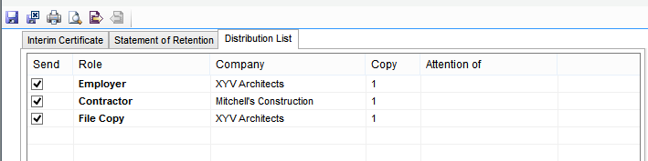

Form Distribution Lists |
Each form in the active job has an associated Form Distribution list. Each of these are populated from the Global Distribution lists. For more information on this, see Global Distribution List.
Please Note: Changes made in the Global Distribution lists will be reflected in the Form Distribution lists of any subsequently added forms.
The information entered in a Distribution List will be shown in a Transmittal Sheet which is produced when Issuing a Form. For more information on what this is, see Transmittal Sheet.
To view or edit a Form’s Distribution list:

Within this list, there are 5 column table with the following column headings:• Send – This column consists of check boxes, which confirms whether or not the form will be sent to the suggested recipient.
By default the check boxes will be ticked. Ticking a check box will result in the corresponding distribution check box on the
form being ticked, and the recipient being included in the accompanying transmittal sheet.
• Role – This column is automatically populated with all of the roles entered in the active job team editor.
Additional roles can only be added via the job team editor as this column is read only.
• Company - This column is automatically populated with all of the companies entered in the active job team editor.
Additional companies can only be added via the job team editor as this column is read only.
• Copy – This column is automatically populated from the Global Distribution list and records how many copies of the
form are being sent to each of the members of the team. The numbers can be edited by clicking twice in the appropriate cell.
Please Note: Changes made will be saved with the form, but subsequently added forms will continue to
read the number of copies to be sent from the Global Distribution lists.
• Attention of - This column is automatically populated with all of the company contacts entered in the active job team editor. Additional company contacts can only be added via the job team editor as this column is read only.
See Also:
Transmittal Sheets
Global Distribution Lists